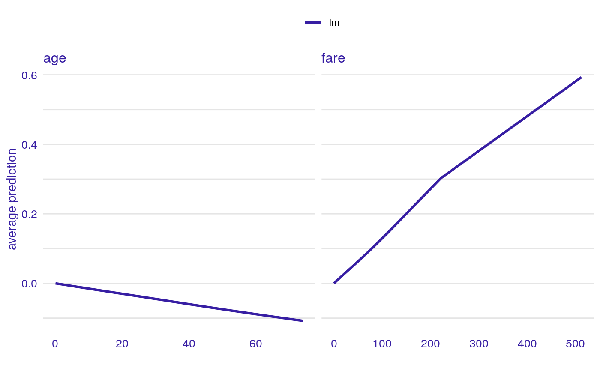
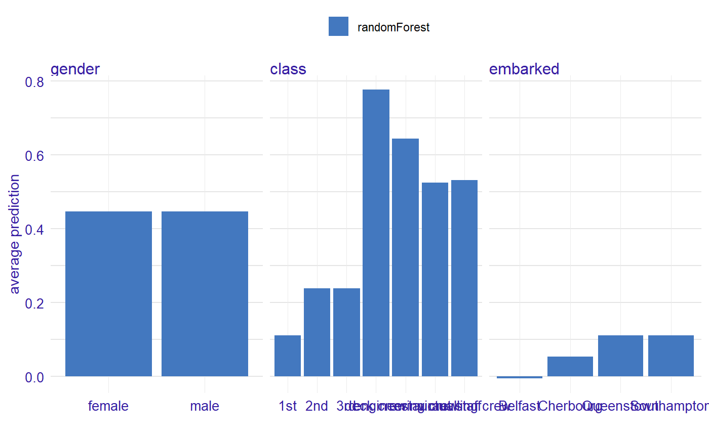
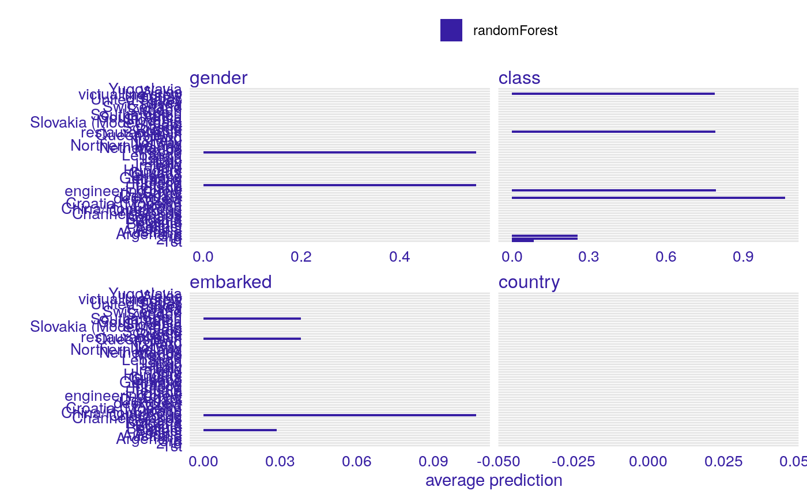

Accumulated Local Effects Profiles aka ALEPlots
Accumulated Local Effects Profiles accumulate local changes in Ceteris Paribus Profiles. Function 'accumulated_dependency' calls 'ceteris_paribus' and then 'aggregate_profiles'.
accumulated_dependency(x, ...) # S3 method for explainer accumulated_dependency(x, variables = NULL, N = 500, variable_splits = NULL, grid_points = 101, ..., only_numerical = TRUE) # S3 method for default accumulated_dependency(x, data, predict_function = predict, label = class(x)[1], variables = NULL, grid_points = 101, variable_splits = NULL, N = 500, ..., only_numerical = TRUE) # S3 method for ceteris_paribus_explainer accumulated_dependency(x, ..., variables = NULL)
Arguments
| x | a model to be explained, or an explainer created with function `DALEX::explain()` or object of the class `ceteris_paribus_explainer`. |
|---|---|
| ... | other parameters |
| variables | names of variables for which profiles shall be calculated. Will be passed to `calculate_variable_splits()`. If NULL then all variables from the validation data will be used. |
| N | number of observations used for calculation of partial dependency profiles. By default, 500 observations will be chosen randomly. |
| variable_splits | named list of splits for variables, in most cases created with `calculate_variable_splits()`. If NULL then it will be calculated based on validation data avaliable in the `explainer`. |
| grid_points | number of points for profile. Will be passed to `calculate_variable_splits()`. |
| only_numerical | a logical. If TRUE then only numerical variables will be plotted. If FALSE then only categorical variables will be plotted. |
| data | validation dataset Will be extracted from `x` if it's an explainer |
| predict_function | predict function Will be extracted from `x` if it's an explainer |
| label | name of the model. By default it's extracted from the 'class' attribute of the model |
Value
an 'aggregated_profiles_explainer' geom
Details
Find more detailes in the Accumulated Local Dependency Chapter.
References
ALEPlot: Accumulated Local Effects (ALE) Plots and Partial Dependence (PD) Plots https://cran.r-project.org/package=ALEPlot, Predictive Models: Visual Exploration, Explanation and Debugging https://pbiecek.github.io/PM_VEE
Examples
library("DALEX")#> #>#> #>#> #> #># Toy examples, because CRAN angels ask for them titanic <- na.omit(titanic) model_titanic_glm <- glm(survived == "yes" ~ gender + age + fare, data = titanic, family = "binomial") explain_titanic_glm <- explain(model_titanic_glm, data = titanic[,-9], y = titanic$survived == "yes")#> Preparation of a new explainer is initiated #> -> model label : lm (default) #> -> data : 2099 rows 8 cols #> -> target variable : 2099 values #> -> predict function : yhat.glm will be used (default) #> -> predicted values : numerical, min = 0.1483104 , mean = 0.3244402 , max = 0.9822194 #> -> residual function : difference between y and yhat (default) #> -> residuals : numerical, min = -0.8840083 , mean = 1.110794e-14 , max = 0.8437859 #> A new explainer has been created!pdp_glm <- accumulated_dependency(explain_titanic_glm, N = 50, variables = c("age", "fare")) head(pdp_glm)#> _vname_ _label_ _x_ _yhat_ _ids_ #> age.lm.0.1666666667 age lm 0.1666667 0.000000000 0 #> age.lm.2 age lm 2.0000000 -0.002821059 0 #> age.lm.4 age lm 4.0000000 -0.005885257 0 #> age.lm.7 age lm 7.0000000 -0.010454712 0 #> age.lm.9 age lm 9.0000000 -0.013483631 0 #> age.lm.13 age lm 13.0000000 -0.019497923 0plot(pdp_glm)library("randomForest")#>#>model_titanic_rf <- randomForest(survived ~ gender + age + class + embarked + fare + sibsp + parch, data = titanic) model_titanic_rf#> #> Call: #> randomForest(formula = survived ~ gender + age + class + embarked + fare + sibsp + parch, data = titanic) #> Type of random forest: classification #> Number of trees: 500 #> No. of variables tried at each split: 2 #> #> OOB estimate of error rate: 18.96% #> Confusion matrix: #> no yes class.error #> no 1323 95 0.06699577 #> yes 303 378 0.44493392#> Preparation of a new explainer is initiated #> -> model label : randomForest (default) #> -> data : 2099 rows 8 cols #> -> target variable : 2099 values #> -> target variable : Please note that 'y' is a factor. (WARNING) #> -> target variable : Consider changing the 'y' to a logical or numerical vector. #> -> target variable : Otherwise I will not be able to calculate residuals or loss function. #> -> predict function : yhat.randomForest will be used (default) #> -> predicted values : numerical, min = 0 , mean = 0.2365736 , max = 1 #> -> residual function : difference between y and yhat (default)#> Warning: ‘-’ not meaningful for factors#> -> residuals : numerical, min = NA , mean = NA , max = NA #> A new explainer has been created!#> Warning: Removed 40 rows containing missing values (geom_col).#> #>#> #> #>#> Warning: Removed 40 rows containing missing values (geom_col).